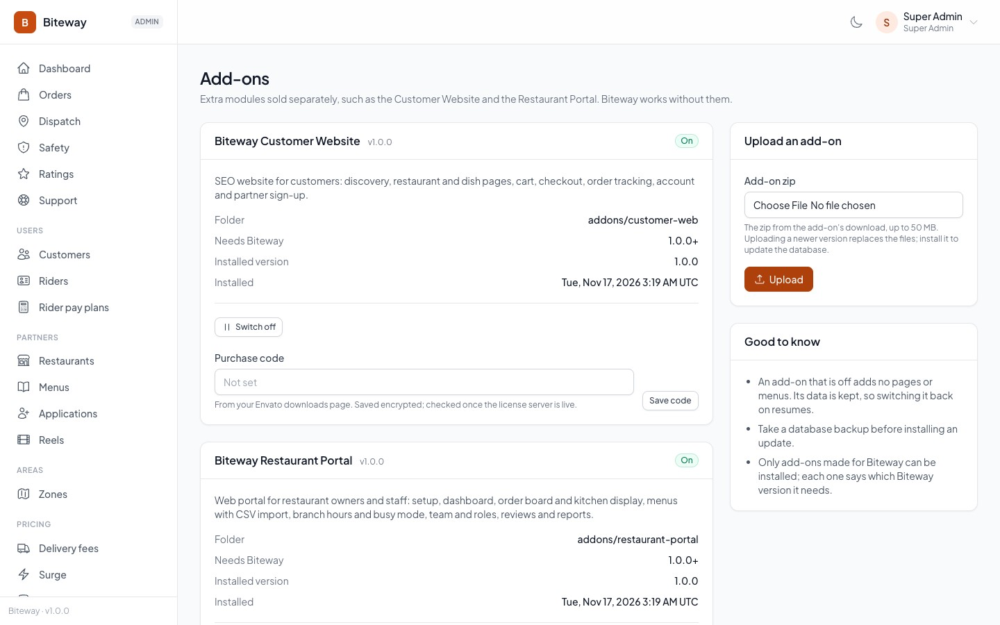
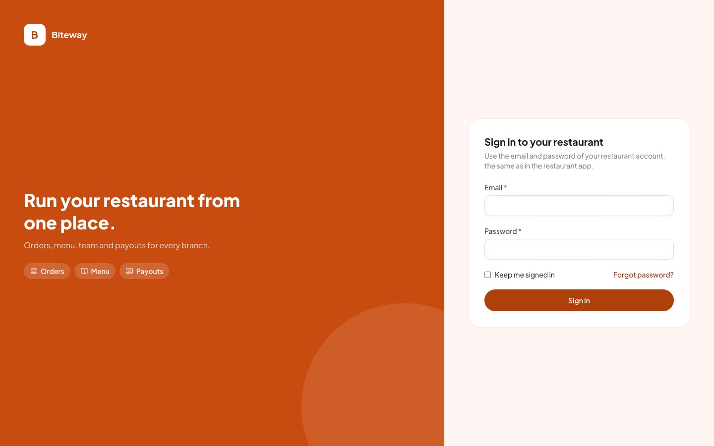
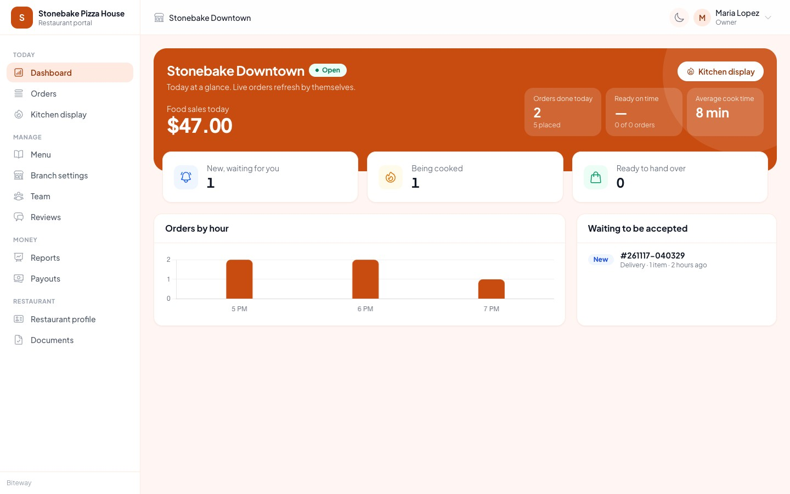
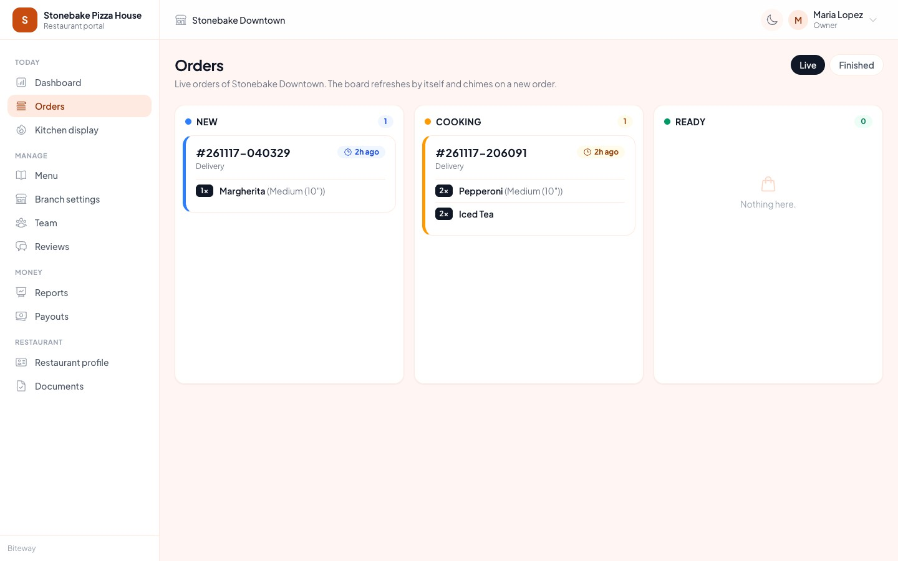
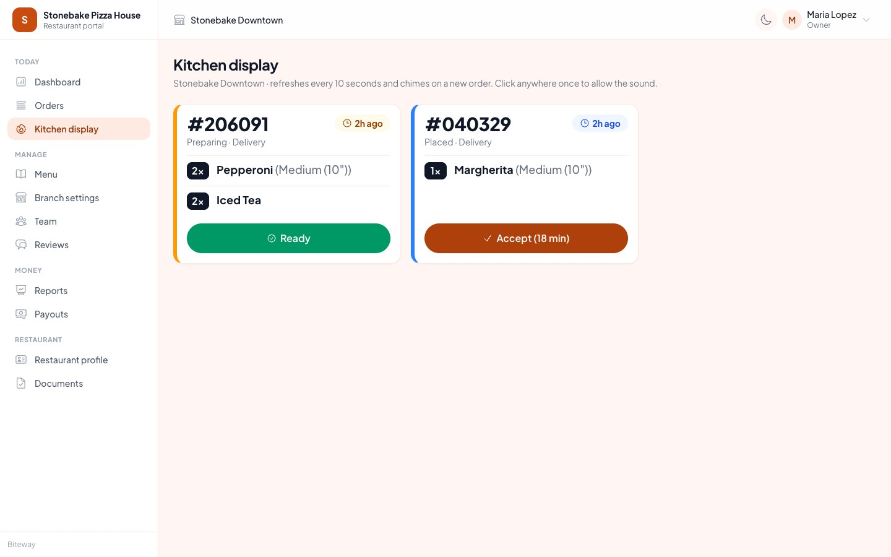
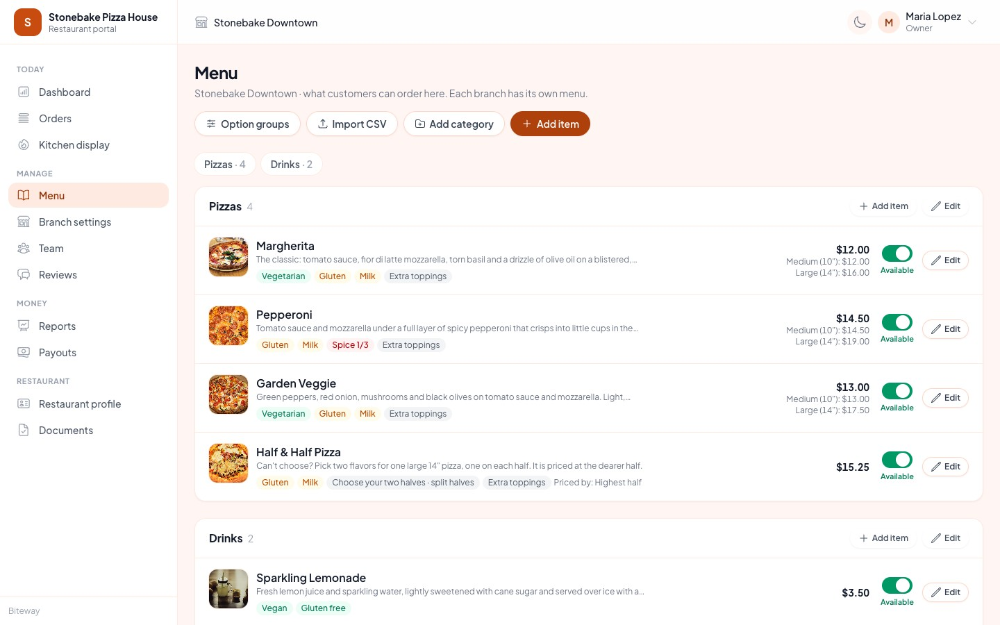
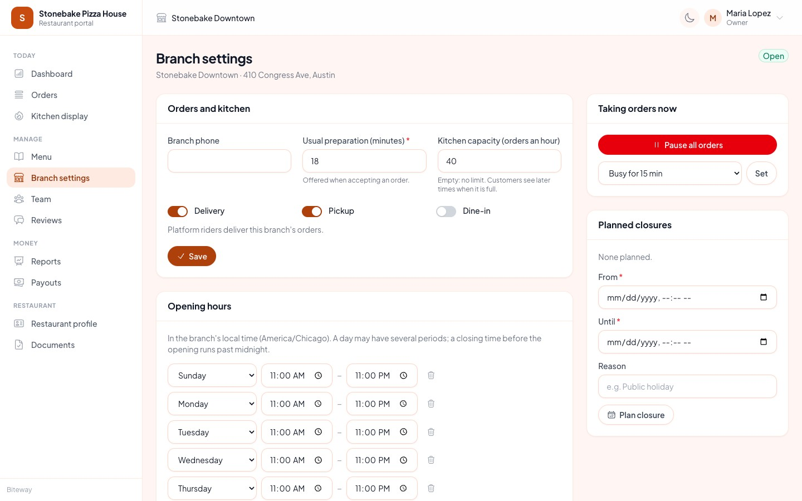
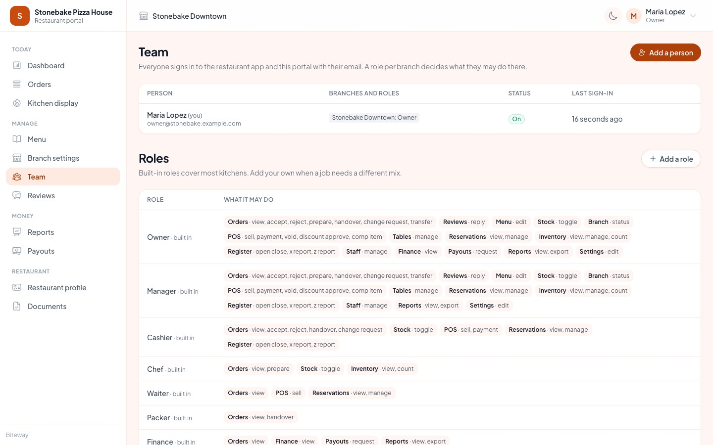
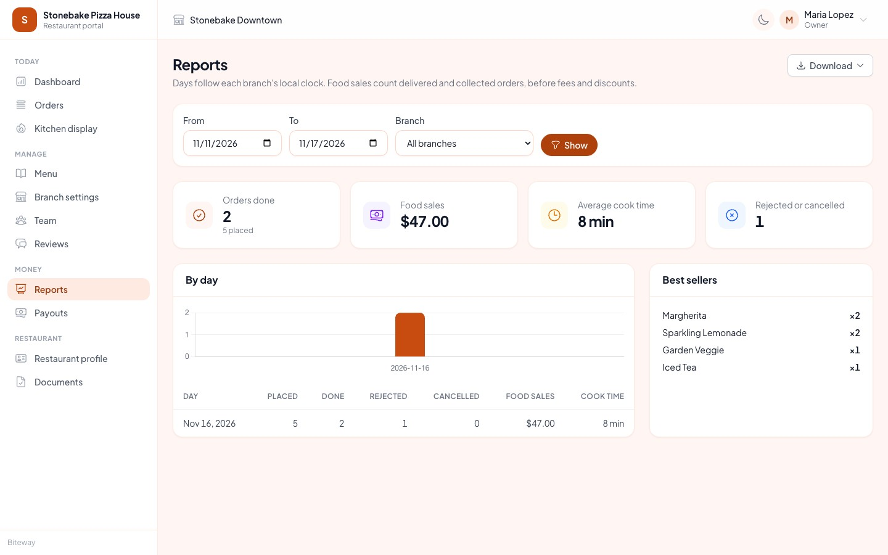
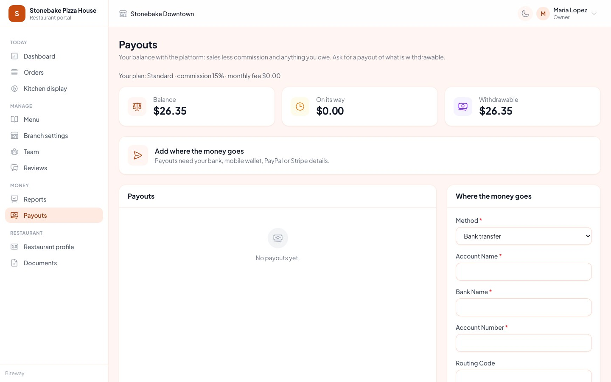

Introduction
The Biteway Restaurant Portal is a web portal for restaurant owners and staff on your Biteway platform. It covers setup, a dashboard, an order board and kitchen display, menus with CSV import, branch hours and busy mode, team and roles, reviews, and reports.
It is an add-on: it needs the Biteway main item, version 1.0.0 or newer, installed on the same server. It uses the main item's database, settings and PHP packages, so it adds no server requirements of its own.
What's in the package
| Folder | Contents |
|---|---|
main/biteway-restaurant-portal/ |
The add-on, with addon.json at its root. Its styles and scripts ship as sources in resources/; npm run build in your Biteway folder builds them. |
documentation/ |
This documentation |
Costs of third-party services: the portal uses the services set up in your Biteway platform, on your own accounts, and you are responsible for any costs they charge. This includes payout provider fees when restaurants are paid automatically (Stripe Connect, PayPal Payouts, RazorpayX, Flutterwave or bKash), payment gateway fees for table orders paid online, your SMTP or email provider, and your hosting. The Biteway Restaurant Portal price covers the source code only.
Installation
The Restaurant Portal is installed from the Biteway admin panel, then its styles and scripts are built with one command in your Biteway folder. There are no Composer commands and no changes to .env.
Before you start
You need:
- Biteway 1.0.0 or newer, installed and working on your server. The add-on runs inside it and uses its database, settings and PHP packages, so it has no server requirements of its own.
- The Super Admin account. Only the Super Admin sees Add-ons in the admin panel.
- Email set up in Biteway (see the Biteway documentation, Deployment → Email). The portal emails password reset links to restaurant staff, and tells your admins when a new restaurant sends its setup for review.
Upload and install
In your download, the add-on is the folder main/biteway-restaurant-portal/, with addon.json at its root. The admin panel finds it inside the zip you downloaded, so you can upload that zip as it is. If you prefer to copy files instead, skip to Copying the folder instead.
- Sign in to the admin panel as Super Admin.
- Open Super Admin → Add-ons.
- Under Upload an add-on, choose the zip you downloaded from CodeCanyon (up to 50 MB) and click Upload. The add-on appears in the list as Not installed.
- Click Install and switch on. Its status changes to On.



The add-on adds no database tables of its own, so installing it changes nothing in your data.
If the add-on shows Needs a newer Biteway, update Biteway first: the card says which version it needs and which one your site runs.
Build its styles and scripts
The add-on ships its sources only. After installing it, and after each update, build its styles and scripts once. In the biteway-backend folder on your server, run:
npm run build
It is the same command you ran when you installed Biteway (it needs Node.js 20.19+ or 22.12+). It builds the admin panel and every installed add-on, and the new files are published on the next page load. Until you run it, the add-on's card in Add-ons says "Its styles and scripts are not built yet", and the portal's pages load without their styles.
No terminal on your host? Build on your own computer: copy the add-on folder into the addons/ folder of a local copy of biteway-backend, named restaurant-portal, run npm ci && npm run build there, then upload the add-on folder, including its new public/build/ folder, to biteway-backend/addons/ on the server.
Copying the folder instead
- Copy
main/biteway-restaurant-portal/into theaddons/folder of your Biteway backend, so that it isbiteway-backend/addons/biteway-restaurant-portal/. - Rename it to
restaurant-portal. The folder must be named after the add-on (biteway-backend/addons/restaurant-portal/addon.json), or Add-ons shows it as Can't be used. - Open Super Admin → Add-ons and click Install and switch on.
Purchase code
Once the add-on is installed, its card in Add-ons has a Purchase code field. Enter the code from your Envato downloads page and click Save code. It is saved encrypted. The add-on works without it, and nothing is checked yet: the field is ready for license checks.
Open the portal
The portal is at:
https://your-domain/portal
your-domain is the address of your Biteway backend. Restaurant staff sign in there with their email and password, the same as in the restaurant app. Forgot password? on the sign-in page emails them a reset link, valid for 60 minutes.

How restaurants get access
The portal has no sign-up form. Every account starts in the admin panel:
- In Restaurants, click Add restaurant. Fill in the profile, the Owner account (name, email and password) and the First branch, and save. The restaurant starts as pending.
- Give the owner the portal address, their email and password.
- The owner signs in. While the restaurant is pending, the portal shows only its Setup checklist and the pages the setup needs (see Using the add-on).
- When every required step is done, the owner clicks Send for review. The first time, every active admin whose role can approve restaurants gets an email.
- Open the restaurant under Restaurants and click Approve. The rest of the portal opens for its staff, and customers can see the restaurant.
The owner (or a manager) then adds the rest of the team under Team in the portal. Each person gets a role at each branch they work at; see Settings.
Staff of a suspended or rejected restaurant, and switched-off accounts, cannot sign in. Once a restaurant is approved, a person must work at a branch to sign in.
Switching off and removing
On the add-on's card in Super Admin → Add-ons:
- Switch off removes the portal's pages at once:
/portalno longer opens. Restaurants keep working in the restaurant app, and all their data stays. Switch on brings the portal back. - Remove appears once the add-on is off. It deletes the add-on's files; the data stays in the database, so installing it again carries on where you left off.
Settings
The add-on has no settings page of its own. The portal follows the settings of your Biteway platform, and what each person sees in it follows their role at each branch.
Platform settings that affect the portal
These are in the Biteway admin panel.
| Where | Setting | What it changes in the portal |
|---|---|---|
| Settings → General | Platform name, logo, favicon, primary and secondary color | The portal's name, sign-in page, browser tab and colors. Changes show at once, with no rebuild. |
| Settings → Ordering → Order types | Customers can order to eat in | Shows POS, Tables and Dine-in reports. Each branch also switches on Dine-in in its own Branch settings. |
| Restaurants keep ingredient stock | Shows Inventory. | |
| Restaurants run buy-one-get-one and happy hour | Shows Offers. | |
| Customers can book a table | Shows Reservations. | |
| Restaurants can use their own web address | Shows Own web address. It also needs the Customer Website add-on installed and on. | |
| Settings → Ordering → Payments | Restaurants answer a new order within (minutes) | How long a new order waits on the order board before it moves to another branch or is rejected. |
| Customers answer a proposed order change within (minutes) | How long the customer has to answer a change proposed from an order's page. | |
| Settings → Ordering → Reusable containers | Dishes can carry a container deposit | Adds the Container deposit field to dishes and the deposit column to the menu import. |
| Settings → Ordering → Payouts | Smallest payout | The lowest amount a restaurant can ask for under Payouts. |
| Most a restaurant may owe the platform | The limit warned about under Payouts. A restaurant can have its own limit on its page under Restaurants. | |
| Offline price limit | Which prices charged offline are kept; differences are listed under Reports. | |
| Super Admin → Payout providers | Stripe Connect | Adds Get paid with Stripe instead under Payouts. Bank, mobile wallet and PayPal details are always offered. |
| Super Admin → Payments | Online payment methods | Needed for "Pay online when ordering" on table QR codes under Tables. |
| Languages | Offered in the apps | The languages in the portal's language picker. |
Whether a branch delivers with platform riders or its own staff is set by the platform; Branch settings shows which.
Restaurant roles
Each person in a restaurant's team has one role at each branch they work at. A cashier at one branch can be a manager at another. The portal shows a page only to people whose role allows it; restaurant-wide pages (such as Team, Reports and Payouts) show when the role allows it at any of their branches.
Biteway comes with these built-in roles. They cannot be changed; a restaurant adds its own roles under Team → Add a role when a job needs a different mix.
| Role | What it can do |
|---|---|
| Owner | Everything. |
| Manager | Everything except the restaurant's balance and payouts: orders, reviews, menu and offers, branch status, POS and tills, tables, reservations, inventory, team, reports and settings. |
| Cashier | See, accept, reject and hand over orders, propose order changes, switch dishes off and on, sell and take payment at the POS, open and close tills with X and Z reports, and manage reservations. |
| Chef | See orders and cook them, switch dishes off and on, see inventory and count stock. |
| Waiter | See orders, sell at the POS and manage reservations. |
| Packer | See orders and hand them over. |
| Finance | See orders, the balance and payouts, ask for payouts, and see and download reports. |
| Accountant | See orders, the balance and payouts, and see and download reports. Cannot ask for payouts. |
The same roles apply in the restaurant app. In the portal, a permission is used only on a page the role can open, as the next table shows.
Permissions and pages
A custom role is a set of these permissions. The table shows what each one opens in the portal.
| Permission | In the portal |
|---|---|
| Orders: view | Dashboard, Orders, Kitchen display, Reviews |
| Orders: accept, reject, prepare, handover, change request, transfer | The buttons on an order: accept, reject, start cooking and ready, hand over (and self-delivery steps), propose a change, move to another branch |
| Reviews: reply | Replying to reviews |
| Menu: edit | Menu (with the CSV import) and Offers |
| Stock: toggle | The on-sale switch on each dish (the Menu page itself needs Menu: edit) |
| Branch: status | Pause all orders and busy mode (on Branch settings, which also needs Settings: edit) |
| POS: sell, payment, void, discount approve, comp item | POS and the actions on a check |
| Register: open close, X report, Z report | Tills under POS → Tills |
| Tables: manage | Tables: areas, tables, QR codes and tills |
| Reservations: view, manage | Reservations |
| Inventory: view, manage, count | Inventory and its tabs |
| Staff: manage | Team |
| Finance: view | Payouts and the statement download |
| Payouts: request | Asking for a payout and saving where the money goes |
| Reports: view | Reports, Dine-in reports and today's numbers on the dashboard |
| Reports: export | The Download buttons on reports |
| Settings: edit | Branch settings, Restaurant profile, Documents, Own web address, and sending the setup for review |
Nobody can change their own account under Team; each person changes their own password under My account. Only an owner gives out the Owner role or changes an owner's account, and a restaurant always keeps at least one active owner.
Language
The portal is translated into English, Bangla and Arabic, with Arabic shown right to left. When more than one language is switched on under Languages in the admin panel, a language button appears at the top of every portal page. Each person's choice is saved with their account. Without a choice, the portal uses the platform's default language.
Payouts
Restaurants ask for payouts in the portal; you approve and send them under Payouts in the admin panel. To send them automatically, set up a provider under Super Admin → Payout providers (see the Biteway documentation). Without one, mark payouts as paid after you transfer the money yourself.
Own web address
With the Customer Website add-on, restaurants can take orders at their own address, such as order.their-restaurant.com. Switch on Restaurants can use their own web address under Settings → Ordering. The restaurant adds the address under Own web address in the portal and creates the two DNS records it shows. HTTPS for that address must be set up on your hosting.
Using the add-on
Restaurant staff open the portal at https://your-domain/portal in any modern browser, on a computer or a tablet. Everything they do there works exactly as in the restaurant app: an order accepted in the portal is the same as one accepted in the app.
Around the portal
- The menu on the left shows only the pages the person's role allows (see Settings), grouped under Today, Manage, Money and Restaurant. Pages of features the platform has switched off are left out.
- The branch picker at the top appears for people who work at more than one branch. Pages about one branch (orders, menu, settings) show the branch picked there.
- The language button appears when the platform offers more than one language. The moon icon switches to dark mode in this browser.
- Your name at the top right opens My account and Sign out.
Setup
While a restaurant waits for approval, its staff see a yellow bar at the top and only the setup pages. Any other page leads back to Setup with "This opens once the platform approves your restaurant."
The Setup checklist has five steps, each with a Start (or Review) button:
| Step | Done when |
|---|---|
| Restaurant profile | The phone, description and logo are filled in. |
| Branch and opening hours | Every branch has opening hours. |
| Documents | A trade license and a food license are handed in (and not rejected). |
| Menu | The restaurant has at least one dish. |
| Team | Optional: more people than the owner. |
When every required step is done, an owner or manager clicks Send for review. Changes made later can be sent again with Send again. Once the platform approves the restaurant, the checklist disappears and the portal opens on the dashboard.
Today

Dashboard (needs Orders: view). Whether the branch is taking orders now, the live orders as New, Being cooked and Ready to hand over, and the new orders waiting to be accepted. With Reports: view it also shows today's numbers: orders done, food sales, average cook time, orders ready on time and orders by hour. It refreshes every 15 seconds and chimes when a new order arrives.

Orders (Orders: view). The live order board in three columns, New, Cooking and Ready, refreshed every 10 seconds with a chime on each new order. The Finished tab lists finished orders, newest first. Opening an order shows its dishes, notes, customer, payment, timeline, refunds and its tax invoice, with the next step the role allows:
- Accept with the minutes to cook, or Reject with a reason for the customer.
- Start cooking, then Ready.
- Hand over to the customer or rider, or, for a branch that delivers with its own staff, Out for delivery and Delivered with the code the customer shows (or Not delivered with a reason).
- Propose a change when a dish is not available: the customer approves or declines, and a lower total is refunded.
- Move to another branch of the same restaurant while the order is new.
- Containers came back, to return a container deposit to the customer.

Kitchen display (Orders: view). Large tickets of new, cooking and ready orders, with how long each has left or how late it is, refreshed every 10 seconds. Click anywhere on the page once so the browser allows the chime.
POS (POS: sell; shown when the platform offers dine-in). The branch's floor plan: open a check at a table or at the counter, add dishes with their sizes and options as a round, and send it to the kitchen. On a check: mark rounds served, ask for the bill, take payment in cash or by card machine (all at once or in shares, with a tip), discount, make an item free, merge, split, move to another table, void, and print the bill or receipt. The branch must have Dine-in on in Branch settings. Cash goes into the till this browser uses: under Tills, choose it, open it with a starting float, put cash in or take it out, see the X report, and close it with the cash counted to get the Z report. The POS needs an internet connection.
Reservations (Reservations: view; shown when the platform offers table bookings). The bookings for a day, with Confirm, Decline, Seat, No-show and Cancel, and New booking for a guest who calls. Booking settings switch bookings on for the branch and set the times, party size, notice, deposit and whether bookings are confirmed at once or by staff.
Manage

Menu (Menu: edit). The branch's categories and dishes; each branch has its own menu. Add and edit categories and items (photo, price or sizes, options, dietary and allergen tags, spice level, stock count, translations), and Option groups such as toppings or the halves of a half-and-half pizza. The on-sale switch on each dish takes it off sale and puts it back.
Import CSV adds or updates many dishes at once:
- Click Import CSV, then Download template.
- Fill it in: one dish per line. A dish with the same category and name as an existing one is updated; others are added, and missing categories are created. The page lists every column and what to write in it.
- Save it as CSV in UTF-8 (comma or semicolon separated, up to 1000 dishes and 2 MB) and click Check the file.
- The preview lists every new and updated dish, or the lines to fix. Nothing is saved until you confirm with the Import button below it, within 30 minutes. Photos and translations are added on each dish afterwards.
Offers (Menu: edit; shown when the platform offers them). Buy one get one free and happy hour discounts on the days and times you choose. They apply by themselves at checkout, and the restaurant pays for them.
Tables (Tables: manage; shown when the platform offers dine-in). Areas such as Hall or Terrace, tables with their seats, a QR code for each table (Print QR codes, or New QR code to replace a lost one), whether guests ordering from the QR code pay online or at the restaurant, and the branch's tills.
Inventory (Inventory: view; shown when the platform offers it). Tabs for Ingredients (with wastage), Recipes (what one portion of each dish uses), Stock count, Movements, Suppliers, Purchase orders (sent to the supplier by email when it has an address, received into stock, and downloadable as PDF), Transfers between branches, and Food cost. Managing needs Inventory: manage; counting and receiving need Inventory: count.

Branch settings (Settings: edit). The branch phone; which services it offers (Delivery, Pickup, Dine-in); the usual preparation time; kitchen capacity in orders an hour; the weekly Opening hours; and Planned closures such as public holidays. Once the restaurant is approved, people with Branch: status also see Pause all orders (and Take orders again) and busy mode for 15 to 90 minutes.

Team (Staff: manage). Everyone in the restaurant, with their branches, roles and last sign-in. Add a person creates an account with a role at each branch; people sign in to the portal and the restaurant app with its email and password. Edit a person to change their details or roles, set a new password, switch them off (they can no longer sign in) or remove them. Add a role creates a role of your own from the permissions.
Reviews (Orders: view). What customers said about the branch's orders. With Reviews: reply, write a public reply; the customer is told the first time.
Money

Reports (Reports: view). Orders, food sales and cook time by day for up to 92 days, for one branch or all of them, with the best sellers and the prices charged offline that differ from the menu. Download saves it as CSV, Excel (XLSX) or PDF (needs Reports: export).
Dine-in reports (Reports: view; shown when the platform offers dine-in). Tabs for Sales (by day and hour, cash, card, tips and discounts), Checks, Tills and Z reports and Staff activity.

Payouts (Finance: view). The restaurant's balance with the platform, what is on its way and what is withdrawable, its plan and commission, and the history of payouts with the reason when one was not paid. Statement downloads every movement for the days chosen. With Payouts: request:
- Where the money goes: bank, mobile wallet or PayPal details, saved encrypted and shown masked, or Stripe's own setup page when the platform offers it.
- Ask for a payout: one at a time, from the platform's smallest payout up to what is withdrawable. A payout can be cancelled until the platform approves it.
Restaurant
These pages need Settings: edit at any branch.
Restaurant profile. What customers see: phone, email, tax ID, cuisines, description, logo and cover picture, and whether unanswered orders move to another branch before they are rejected. The name is set by the platform.
Documents. The licenses the platform reviews, uploaded as PDF or pictures, with an expiry date when they have one.
Own web address (shown when the platform offers it). Add your own address, add the DNS records shown, and click Check DNS now until it shows Verified.
My account
Under your name at the top right: the branches you work at with your role at each, and Change password. After changing it, sign in again in the restaurant app.
Updating
A new version of the add-on is installed the same way as the first one, from Super Admin → Add-ons. Your restaurants, menus, orders and settings are kept: they live in Biteway's database, and the add-on only reads and changes them through Biteway.
Before you update
- Back up the database. The Add-ons page reminds you: take a database backup before installing an update. Biteway's built-in updater backs up only when Biteway itself is updated, not when an add-on is.
- Check the version it needs. Each version says which Biteway version it needs (
requiresin itsaddon.json, shown as Needs Biteway on the add-on's card). If your site runs an older Biteway, update Biteway first (see the Biteway documentation, Deployment → Updating). - Read the changelog of the new version for anything to do after updating.
Update the add-on
- Download the new version from CodeCanyon.
- Open Super Admin → Add-ons and upload the downloaded zip under Upload an add-on. It replaces the add-on's files.
- The card now shows Update ready. Click Install update. This runs the new version's database updates, if it has any, and switches the add-on back on.
- In the
biteway-backendfolder, runnpm run buildto build the new version's styles and scripts (Installation).
Between steps 2 and 3 the portal is off, so restaurant staff cannot open it. Do both steps together, ideally at a quiet time. The restaurant app keeps working throughout.
You can also replace the files by hand: delete biteway-backend/addons/restaurant-portal/, copy the new main/biteway-restaurant-portal/ into biteway-backend/addons/ and rename it to restaurant-portal, then click Install update and run npm run build.
Good to know
- Older versions are refused. Uploading a version older than the installed one fails with "Version … is older than the installed …".
- Updating Biteway does not touch the add-on. Biteway's updater never changes installed add-ons, so the portal stays installed and on after a Biteway update.
- The purchase code stays saved across updates.
- After updating, ask staff to reload the portal. The new styles and scripts are loaded automatically, as their address changes with each version.
If something goes wrong
- The card shows Needs a newer Biteway: update Biteway, then click Install update.
- The card shows Can't be used with a message: the add-on's files are incomplete, or its folder is not named
restaurant-portal. Upload the zip again. - The update stopped with "The add-on's database update failed": the message shows the database error. Restore your backup if needed, fix the cause (often the database user's rights), and click Install update again.
Credits and licenses
The add-on's own code, design and texts are covered by the Envato Market license you bought. Everything below is third-party: it keeps its own license, and every license allows commercial use and redistribution. LICENSES.txt in the add-on folder lists the same packages.
Shipped inside the add-on
The add-on has no Composer or npm packages of its own. Its styles and scripts are built by npm run build in the main item, from these packages of the Biteway main item:
| Package | Version | Used for | License |
|---|---|---|---|
Alpine.js (alpinejs) |
3.17.5 | Menus, dialogs, the POS round builder and other interactive parts | MIT |
Chart.js (chart.js), with its color helper @kurkle/color 0.3.4 |
4.6.1 | Charts on the dashboard and reports | MIT |
Tailwind CSS (tailwindcss) |
4.3.3 | The generated stylesheet | MIT |
The build itself was made with Vite 7.3.7 and @tailwindcss/vite 4.3.3 (both MIT); they are not shipped.
Fonts
| Font | Files | License |
|---|---|---|
Plus Jakarta Sans, from the @fontsource/plus-jakarta-sans 5.3.0 package |
Latin, weights 400 to 800, as .woff2 and .woff in public/build/assets/ |
SIL Open Font License 1.1 |
The font is served from your own site, not from an online font service.
Icons
| Icons | License |
|---|---|
Heroicons, through the main item's blade-ui-kit/blade-heroicons package |
MIT |
Sounds
The new-order chime is a short two-note tone generated by the browser. No sound file is shipped.
Packages of the main item
On the server, the add-on runs on Biteway's own PHP packages, which are credited in the Biteway documentation (Credits and licenses). Among them, the portal uses Laravel for its pages, Heroicons for its icons, and Biteway's services for the table QR codes and for the PDF and Excel downloads.
Troubleshooting and FAQ
Look first at the add-on's card in Super Admin → Add-ons: its status and any message explain most problems. For a server error, the newest file in storage/logs/ of your Biteway backend names the real cause.
Installing
Uploading fails with "The zip has no addon.json at its top level."
The zip is not the add-on. Upload the zip you downloaded from CodeCanyon as it is, or a zip of the main/biteway-restaurant-portal/ folder (Installation).
Uploading fails, or the page says the file is too large.
The zip may be up to 50 MB, but your PHP limits (upload_max_filesize and post_max_size) may be lower. Raise them, or copy the folder to biteway-backend/addons/restaurant-portal/ instead. The web server must be able to write to biteway-backend/addons/ and biteway-backend/public/addons/.
The card says "Can't be used".
The folder is not named restaurant-portal, or addon.json is missing or damaged. Upload the zip again.
The card says "Needs a newer Biteway". Your Biteway is older than the add-on needs. Update Biteway, then click Install and switch on (or Install update).
/portal does not open ("Not Found").
The add-on is not running. In Add-ons its status must be On. Not installed, Off or Update ready each have a button to fix it.
The portal opens without styles.
Its styles and scripts are not built yet: run npm run build in the biteway-backend folder (Installation); the add-on's card in Add-ons says so until you do. If they are built and the pages still have no styles, make sure the web server can write to public/addons/, then click Switch off and Switch on to copy them again.
Signing in
"These details don't match our records." The email or password is wrong. Staff use the same email and password as in the restaurant app. Forgot password? emails a reset link.
"Your account is not active. Please ask your restaurant's owner." The account was switched off under Team. An owner or manager switches it on again.
"You are not linked to a branch yet. Please ask your restaurant's owner." The person has no role at any branch. Under Team, edit them and pick a role at a branch.
"Your restaurant cannot use the portal. Please contact support." The restaurant is suspended or rejected in the admin panel. Reinstate it under Restaurants if that was not intended.
The reset email never arrives.
Check Biteway's email settings (see the Biteway documentation, Deployment → Email). With MAIL_MAILER=log, emails are written to storage/logs/ instead of being sent. The link works for 60 minutes.
The sign-in page just reloads.
The same cause as for the admin panel: the site is opened over plain http://, and the sign-in cookie is only sent over HTTPS. Add HTTPS.
Pages and roles
A new restaurant only sees Setup. That is expected until you approve it. The owner sends the setup for review; then open the restaurant under Restaurants in the admin panel and click Approve.
"Send for review" cannot be clicked. A required step is not done yet: profile (phone, description and logo), opening hours at every branch, both licenses, and at least one dish. A rejected document counts as missing: upload a new one. Only people with Settings: edit see the button.
A staff member can't see a page, or sees "Your role cannot do this." Pages follow the person's role at the branch picked at the top. They may have another role at another branch: pick it in the branch picker, or give them a role with that permission under Team (Settings).
POS, Tables, Dine-in reports, Inventory, Offers, Reservations or Own web address are missing for everyone. The platform has that feature switched off under Settings → Ordering in the admin panel. Own web address also needs the Customer Website add-on.
The POS says the branch does not take dine-in orders. Switch on Dine-in under Branch settings for that branch.
Pause and busy mode are missing on Branch settings. They show once the restaurant is approved, and only to roles with Branch: status.
Orders and the chime
The new-order chime does not play. Browsers block sound until the page is clicked once: click anywhere on the dashboard, order board or kitchen display after opening it. Check that the computer's sound is on. The chime plays only on those three pages, and only while the tab is visible.
The order board stops refreshing. It refreshes only while the tab is visible and pauses while someone types in a field on it. If the session has ended, reload the page and sign in again.
Menu import
The preview names each line to fix; nothing is saved until the file has no errors.
| Message | Fix |
|---|---|
| Save the file as CSV in UTF-8 and try again. | In your spreadsheet, choose CSV UTF-8 when saving. |
| The first line must name the columns… / Unknown columns… | Start from Download template and keep its first line. |
| Add a price or a sizes column. | Every dish needs a price, or sizes written as Medium=12.00|Large=15.00. |
| Import at most 1000 dishes at a time. | Split the file. |
| Line …: there is no option group named … in this branch | Create the option group under Menu → Option groups first, with exactly that name. |
| Line …: … is not a known … value | Use only the values the import page lists for that column. |
| The file expired. Upload it again. | More than 30 minutes passed between the preview and the import. |
Questions
Can restaurants sign up on their own? No. You create each restaurant and its owner under Restaurants → Add restaurant; the owner then adds the team in the portal.
Does the portal replace the restaurant app? It covers the same daily work in a browser, plus setup, team, reports and payouts. The portal's POS needs an internet connection; the restaurant app's tables keep working offline and print to receipt printers.
Is anything lost when I switch the add-on off? No. It adds no tables of its own, and all restaurant data stays in Biteway. Switching it on again brings everything back.
Can I change the /portal address?
No, the portal is always at /portal on your Biteway backend's domain.
Will search engines list the portal?
The add-on adds Disallow: /portal to your site's robots.txt, so search engines are asked to leave it out.
Support
Support is given through CodeCanyon: open the Support tab on the Biteway Restaurant Portal item page and send your question there. Item support covers questions about how the add-on works, help with problems and bugs in the add-on, and help with the third-party parts included with it. It does not cover installing it on your server for you, customizing it, or building new features.
Questions about Biteway itself (the admin panel, the apps, payments) go to the Biteway item page.
What to send
So we can help quickly, include:
- The add-on's version and status, as shown on its card in Super Admin → Add-ons, and the Biteway version (at the bottom of the admin menu and on the Health page).
- What you did, what you expected, and what happened instead, with screenshots.
- For a problem with one page: the portal page, and the role of the person at the branch picked at the top.
- For a server problem: the error from the newest file in
storage/logs/, and what Health shows. - For a display problem: the browser and its version.
Never send passwords, purchase codes, .env files or your restaurants' and customers' personal data.
Before you write
Many questions are answered in Troubleshooting and FAQ. The add-on's card in Super Admin → Add-ons and the newest log file in storage/logs/ often show the cause straight away.
Changelog
1.0.0 (16 November 2026)
First release. Requires Biteway 1.0.0 or newer.
- Installs from Super Admin → Add-ons with no build step; the styles and scripts are included.
- Staff sign in at
/portalwith the same email and password as the restaurant app, and reset a forgotten password by email. - Portal layout with a side menu that follows each person's role, a branch picker, an account menu, dark mode, and English, Bangla and Arabic (right to left).
- Setup for a new restaurant: a checklist (profile, branch hours, documents, menu, team), the restaurant profile with logo and cover, documents for review, and sending the setup for review.
- Branch settings: contact, services, preparation time, kitchen capacity, weekly hours, planned closures, pausing orders and busy mode.
- Dashboard with the live orders and today's numbers.
- Order board and kitchen display that refresh by themselves and chime on a new order, with every order step: accept, reject, cook, ready, hand over, self-delivery, proposed changes, moving to another branch and container returns.
- Menus with categories, dishes, sizes, option groups and translations, the on-sale switch, and CSV import with a preview.
- Team: people with a role at each branch, the built-in roles and your own roles.
- Reviews with public replies, and reports by day with CSV, Excel and PDF downloads.
- Payouts: the restaurant's balance, what is on its way and what is withdrawable; asking for a payout (one at a time, from the platform's smallest payout up to what is withdrawable) and canceling it before approval; where the money goes (bank, mobile wallet or PayPal, saved encrypted and shown masked, or Stripe's own setup page); and the history, with the reason when a payout was not paid.
- Dine-in: a browser POS with tills and X and Z reports, tables with QR codes, and dine-in reports.
- Table reservations, buy-one-get-one and happy hour offers, and ingredient inventory with recipes, stock counts, suppliers, purchase orders, transfers and food cost, each when the platform switches it on.
- Own web address for a restaurant, with the Customer Website add-on.